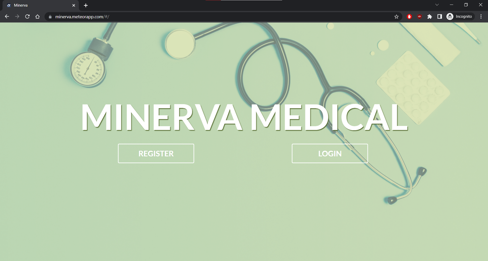

Visit Website
Visit GitHub Repo
Visit Clinic Website
Hawaii Homeless Outreach & Medical Education (H.O.M.E.) Clinic is a mobile clinic that sees patients at various sites around the island. The mission is to improve access to health care for the houseless while understanding their healthcare needs.
The clinic used Athenahealth Electronic Health Record (EHR) to document ordered drugs and vaccines at the end of an encounter and a Google Forms & Sheets system to log and deduct drugs and vaccines from the master inventory. Manually entering information proved to be a pain point; the process was slow and the supply was inaccurate. It was difficult for the business to manage their supply. The clinic needed an inventory management system!
The problem was introduced to me during my Software Engineering II course. My team of 8 worked in short sprints with regular communication and using GitHub Project Boards and Issues for agile project management. The app was largely incomplete by the course end, thus, I volunteered to continue and push it to production.
The proposed solution was to replace the Google Forms & Sheets system with an inventory management app that applies QR codes to each batch of drugs and vaccines. A QR code links to an item’s lot number which uniquely identifies the batch of product produced by a manufacturer. Scanning a QR code opens the item’s information page. And on the page are links to the add and dispense forms auto-populated with the item’s information. Once complete, a log of the transaction is stored and the master inventory is updated. The improved business process provides physicians with numerous benefits.
The app is built with Meteor, a full-stack JavaScript framework that bundles React, MongoDB, and Node.js, and hosted with Meteor Cloud.
Athenahealth EHR continued to document ordered, administered or dispensed, drugs and vaccines for patients at the end of an encounter. To further save time, I proposed a pipeline to fetch ordered drug and vaccine information for the day to sync to the database; ordered drug and vaccine quantities are auto deducted from the master inventory at night. I coordinated with the EHR vendor to gain API access and design the data pipeline. Using Athenahealth’s Changed Data Subscriptions the app can subscribe to the changed orders feed and fetch the created orders for the day.
Due to the new app, the required effort for adding and dispensing supply was reduced. Managing supply was easier, as inventory and log information was structured, which meant happier physicians.
I learned to adapt my solution to the client’s request. Understanding the client’s business process is crucial! I often had to clarify details and rework solutions as new information arrived. What I found most helpful was visiting the clinic and chatting in person.
Minerva was my deep dive into the Meteor framework. An aspect of Meteor I found brilliant was it does not use the request response cycle for client server interaction! Instead, on client connection a Minimongo instance is created; Minimongo is an in-memory, in-browser implementation of Mongo. Then, the Distributed Data Protocol (DDP) propagates data changes between the server and client databases.